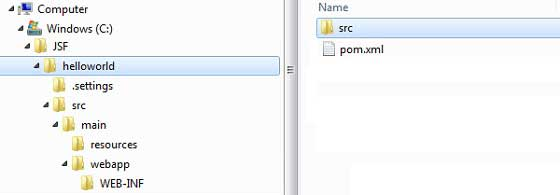
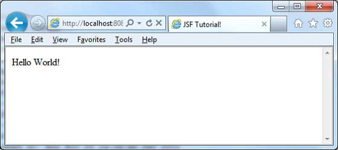

JSF - First Application
To create a simple JSF application, we'll use maven-archetype-webapp plugin. In example below, We'll create a maven based web application project in C:\JSF folder.
Create Project
Let's open command console, go the C:\ > JSF directory and execute the following mvn command.
C:\JSF>mvn archetype:create -DgroupId=com.tutorialspoint.test -DartifactId=helloworld -DarchetypeArtifactId=maven-archetype-webapp
Maven will start processing and will create the complete java web application project structure.
[INFO] Scanning for projects...
[INFO] Searching repository for plugin with prefix: 'archetype'.
[INFO] -------------------------------------------------------------
[INFO] Building Maven Default Project
[INFO] task-segment: [archetype:create] (aggregator-style)
[INFO] -------------------------------------------------------------
[INFO] [archetype:create {execution: default-cli}]
[INFO] Defaulting package to group ID: com.tutorialspoint.test
[INFO] artifact org.apache.maven.archetypes:maven-archetype-webapp:
checking for updates from central
[INFO] -------------------------------------------------------------
[INFO] Using following parameters for creating project
from Old (1.x) Archetype: maven-archetype-webapp:RELEASE
[INFO] -------------------------------------------------------------
[INFO] Parameter: groupId, Value: com.tutorialspoint.test
[INFO] Parameter: packageName, Value: com.tutorialspoint.test
[INFO] Parameter: package, Value: com.tutorialspoint.test
[INFO] Parameter: artifactId, Value: helloworld
[INFO] Parameter: basedir, Value: C:\JSF
[INFO] Parameter: version, Value: 1.0-SNAPSHOT
[INFO] project created from Old (1.x) Archetype in dir:
C:\JSF\helloworld
[INFO] -------------------------------------------------------------
[INFO] BUILD SUCCESSFUL
[INFO] -------------------------------------------------------------
[INFO] Total time: 7 seconds
[INFO] Finished at: Mon Nov 05 16:05:04 IST 2012
[INFO] Final Memory: 12M/84M
[INFO] -------------------------------------------------------------
Now go to C:/JSF directory. You'll see a java web application project created named helloworld (as specified in artifactId). Maven uses a standard directory layout as shown below:
Using above example, we can understand following key concepts
| Folder Structure | Description |
|---|---|
| helloworld | contains src folder and pom.xml |
| src/main/wepapp | contains WEB-INF folder and index.jsp page |
| src/main/resources | it contains images/properties files (In above example, we need to create this structure manually). |
Add JSF capability to Project
Add the JSF dependencies as shown below.
<dependencies> <dependency> <groupId>com.sun.faces</groupId> <artifactId>jsf-api</artifactId> <version>2.1.7</version> </dependency> <dependency> <groupId>com.sun.faces</groupId> <artifactId>jsf-impl</artifactId> <version>2.1.7</version> </dependency> </dependencies>
Complete POM.xml
<project xmlns="http://maven.apache.org/POM/4.0.0"
xmlns:xsi="http://www.w3.org/2001/XMLSchema-instance"
xsi:schemaLocation="http://maven.apache.org/POM/4.0.0
http://maven.apache.org/maven-v4_0_0.xsd">
<modelVersion>4.0.0</modelVersion>
<groupId>com.tutorialspoint.test</groupId>
<artifactId>helloworld</artifactId>
<packaging>war</packaging>
<version>1.0-SNAPSHOT</version>
<name>helloworld Maven Webapp</name>
<url>http://maven.apache.org</url>
<dependencies>
<dependency>
<groupId>junit</groupId>
<artifactId>junit</artifactId>
<version>3.8.1</version>
<scope>test</scope>
</dependency>
<dependency>
<groupId>com.sun.faces</groupId>
<artifactId>jsf-api</artifactId>
<version>2.1.7</version>
</dependency>
<dependency>
<groupId>com.sun.faces</groupId>
<artifactId>jsf-impl</artifactId>
<version>2.1.7</version>
</dependency>
</dependencies>
<build>
<finalName>helloworld</finalName>
<plugins>
<plugin>
<groupId>org.apache.maven.plugins</groupId>
<artifactId>maven-compiler-plugin</artifactId>
<version>2.3.1</version>
<configuration>
<source>1.6</source>
<target>1.6</target>
</configuration>
</plugin>
</plugins>
</build>
</project>
Prepare Eclipse project
Let's open command console, go the C:\ > JSF > helloworld directory and execute the following mvn command.
C:\JSF\helloworld>mvn eclipse:eclipse -Dwtpversion=2.0
Maven will start processing and will create the eclipse ready project and will add wtp capability.
Downloading: http://repo.maven.apache.org/org/apache/maven/plugins/
maven-compiler-plugin/2.3.1/maven-compiler-plugin-2.3.1.pom
5K downloaded (maven-compiler-plugin-2.3.1.pom)
Downloading: http://repo.maven.apache.org/org/apache/maven/plugins/
maven-compiler-plugin/2.3.1/maven-compiler-plugin-2.3.1.jar
29K downloaded (maven-compiler-plugin-2.3.1.jar)
[INFO] Searching repository for plugin with prefix: 'eclipse'.
[INFO] ------------------------------------------------------------
[INFO] Building helloworld Maven Webapp
[INFO] task-segment: [eclipse:eclipse]
[INFO] ------------------------------------------------------------
[INFO] Preparing eclipse:eclipse
[INFO] No goals needed for project - skipping
[INFO] [eclipse:eclipse {execution: default-cli}]
[INFO] Adding support for WTP version 2.0.
[INFO] Using Eclipse Workspace: null
[INFO] Adding default classpath container: org.eclipse.jdt.
launching.JRE_CONTAINER
Downloading: http://repo.maven.apache.org/
com/sun/faces/jsf-api/2.1.7/jsf-api-2.1.7.pom
12K downloaded (jsf-api-2.1.7.pom)
Downloading: http://repo.maven.apache.org/
com/sun/faces/jsf-impl/2.1.7/jsf-impl-2.1.7.pom
10K downloaded (jsf-impl-2.1.7.pom)
Downloading: http://repo.maven.apache.org/
com/sun/faces/jsf-api/2.1.7/jsf-api-2.1.7.jar
619K downloaded (jsf-api-2.1.7.jar)
Downloading: http://repo.maven.apache.org/
com/sun/faces/jsf-impl/2.1.7/jsf-impl-2.1.7.jar
1916K downloaded (jsf-impl-2.1.7.jar)
[INFO] Wrote settings to C:\JSF\helloworld\.settings\
org.eclipse.jdt.core.prefs
[INFO] Wrote Eclipse project for "helloworld" to C:\JSF\helloworld.
[INFO]
[INFO] -----------------------------------------------------------
[INFO] BUILD SUCCESSFUL
[INFO] -----------------------------------------------------------
[INFO] Total time: 6 minutes 7 seconds
[INFO] Finished at: Mon Nov 05 16:16:25 IST 2012
[INFO] Final Memory: 10M/89M
[INFO] -----------------------------------------------------------
Import project in Eclipse
Now import project in eclipse using Import wizard
Go to File > Import... > Existing project into workspace
Select root directory to helloworld
Keep Copy projects into workspace to be checked.
Click Finish button.
Eclipse will import and copy the project in its workspace C:\ > Projects > Data > WorkSpace

Create a Managed Bean
Create a package structure under src > main > java as com > tutorialspoint > test . Create HelloWorld.java class in this package. Update the code of HelloWorld.java as shown below.
package com.tutorialspoint.test;
import javax.faces.bean.ManagedBean;
@ManagedBean(name = "helloWorld", eager = true)
public class HelloWorld {
public HelloWorld() {
System.out.println("HelloWorld started!");
}
public String getMessage() {
return "Hello World!";
}
}
Create a JSF page
Create a page home.xhtml under webapp folder. Update the code of home.xhtml as shown below.
<!DOCTYPE html PUBLIC "-//W3C//DTD XHTML 1.0 Transitional//EN"
"http://www.w3.org/TR/xhtml1/DTD/xhtml1-transitional.dtd">
<html xmlns="http://www.w3.org/1999/xhtml">
<head>
<title>JSF Tutorial!</title>
</head>
<body>
#{helloWorld.message}
</body>
</html>
Build the project
Select helloworld project in eclipse
Use Run As wizard
Select Run As > Maven package
Maven will start building the project and will create helloworld.war under C:\ > Projects > Data > WorkSpace > helloworld > target folder
[INFO] Scanning for projects... [INFO] ----------------------------------------------------- [INFO] Building helloworld Maven Webapp [INFO] [INFO] Id: com.tutorialspoint.test:helloworld:war:1.0-SNAPSHOT [INFO] task-segment: [package] [INFO] ----------------------------------------------------- [INFO] [resources:resources] [INFO] Using default encoding to copy filtered resources. [INFO] [compiler:compile] [INFO] Nothing to compile - all classes are up to date [INFO] [resources:testResources] [INFO] Using default encoding to copy filtered resources. [INFO] [compiler:testCompile] [INFO] No sources to compile [INFO] [surefire:test] [INFO] Surefire report directory: C:\Projects\Data\WorkSpace\helloworld\target\surefire-reports ------------------------------------------------------- T E S T S ------------------------------------------------------- There are no tests to run. Results : Tests run: 0, Failures: 0, Errors: 0, Skipped: 0 [INFO] [war:war] [INFO] Packaging webapp [INFO] Assembling webapp[helloworld] in [C:\Projects\Data\WorkSpace\helloworld\target\helloworld] [INFO] Processing war project [INFO] Webapp assembled in[150 msecs] [INFO] Building war: C:\Projects\Data\WorkSpace\helloworld\target\helloworld.war [INFO] ------------------------------------------------ [INFO] BUILD SUCCESSFUL [INFO] ------------------------------------------------ [INFO] Total time: 3 seconds [INFO] Finished at: Mon Nov 05 16:34:46 IST 2012 [INFO] Final Memory: 2M/15M [INFO] ------------------------------------------------
Deploy WAR file
Stop the tomcat server.
Copy the helloworld.war file to tomcat installation directory > webapps folder.
Start the tomcat server.
Look inside webapps directory, there should be a folder helloworld got created.
Now helloworld.war is successfully deployed in Tomcat Webserver root.
Run Application
Enter a url in web browser: http://localhost:8080/helloworld/home.jsf to launch the application
Server name (localhost) and port (8080) may vary as per your tomcat configuration.
